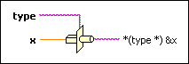

Type Cast Function
Owning Palette: Data Manipulation Functions
Requires: Base Development System
Casts x to the data type, type, by flattening it and unflattening it using the new data type. If the function must reinterpret data instead of transforming it, LabVIEW uses a temporary buffer. This function has the risk of reinterpreting data. To preserve the data value while converting the data, use the Coerce To Type function instead.
 | Note You can also use the Conversion VIs and functions to convert data types. |

 Add to the block diagram Add to the block diagram |
 Find on the palette Find on the palette |